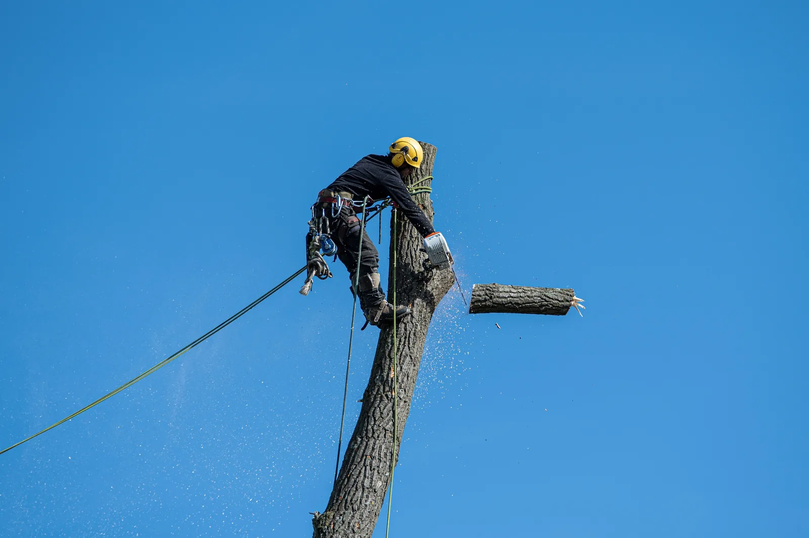

Boom vellen
De boom wordt vanaf de voet in een vooraf bepaalde richting neergehaald. Dit kan vooral wanneer er voldoende vrije ruimte is.
Gevestigd in Rotterdam · Aanvragen uit heel Nederland welkom
Boom laten rooien of verwijderen
Wilt u een boom volledig laten verwijderen? BomenRooier beoordeelt wat er nodig is en maakt een duidelijke offerte voor het kappen, rooien en eventueel verwijderen van de boomstronk.
Geen verplichtingen. U ontvangt eerst een inschatting of offerte op maat.

Wat doet een bomenrooier?
Een bomenrooier verwijdert een boom op een gecontroleerde manier. Op een open terrein kan een boom soms in één keer worden geveld. In een tuin, langs een woning of dicht bij een schutting wordt de boom vaak in kleinere delen afgebroken. Daarbij wordt rekening gehouden met de ruimte, de omgeving, de bereikbaarheid en de manier waarop hout en takken worden afgevoerd.
Bij een boom laten rooien gaat het doorgaans om het compleet verwijderen van de boom. Afhankelijk van uw wens kan ook de achtergebleven stronk worden uitgefreesd en kunnen hinderlijke wortels worden aangepakt. Zo wordt de plek weer bruikbaar voor bestrating, een gazon, beplanting of een nieuwe boom.
De boom wordt vanaf de voet in een vooraf bepaalde richting neergehaald. Dit kan vooral wanneer er voldoende vrije ruimte is.
Een brede term voor het verwijderen van het bovengrondse deel van de boom, in één keer of stapsgewijs.
De boom wordt volledig verwijderd, waarbij de stronk en wortels afhankelijk van de opdracht ook worden meegenomen.
Boomwerkzaamheden
Elke locatie vraagt om een andere aanpak. Daarom kijken we eerst naar de boom, de omgeving en het gewenste eindresultaat.
De boom gecontroleerd verwijderen en de locatie netjes achterlaten. Inclusief afvoer en stronkverwijdering wanneer dat is afgesproken.
Offerte voor boomrooienEen boom laten kappen wanneer deze weg moet door ruimtegebrek, schade, ziekte of een nieuwe inrichting van de tuin.
Meer over boom kappenTakwerk gericht uitvoeren om overlast te beperken, de kroon te verzorgen of risicovolle en dode takken te verwijderen.
Meer over bomen snoeienDe achtergebleven stronk uitfrezen zodat de plek weer vlak en bruikbaar kan worden gemaakt.
Meer over stronk verwijderenHinderlijke wortels aanpakken wanneer deze bestrating opdrukken of de herinrichting van de grond in de weg zitten.
Vraag de mogelijkheden opEen beschadigde, instabiele of omgewaaide boom laten beoordelen en veilig laten verwijderen.
Bel bij een urgente situatie
Passende aanpak per locatie
Een grote boom kan zelden zomaar worden omgezaagd. Staat de boom dicht bij een woning, schuur, erfafscheiding, weg of kabels, dan moet het werk zorgvuldig worden voorbereid. De kroon en stam kunnen in delen worden verwijderd, waarbij takken en hout gecontroleerd naar beneden worden gebracht.
Voor de offerte kijken we onder meer naar:
Zo werkt een aanvraag
U hoeft vooraf niet precies te weten welke techniek nodig is. Laat vooral zien om welke boom en locatie het gaat.
Deel uw postcode, plaats, gewenste werkzaamheden en duidelijke foto’s van de boom en omgeving.
We bekijken de omvang, bereikbaarheid, risico’s en afvoer. Wanneer nodig stellen we aanvullende vragen.
U ontvangt een duidelijke prijs vooraf. Na akkoord wordt een passend moment voor de werkzaamheden ingepland.
Wanneer een boom laten verwijderen?
Niet elke boom hoeft direct weg. Maar soms is rooien de meest praktische of veilige oplossing.
Storm, een gescheurde stam of afgebroken kroon kan de stabiliteit en veiligheid beïnvloeden.
Bij een verbouwing, nieuwe schuur, uitbouw, bestrating of complete herinrichting van de tuin.
Wortelopdruk, te veel schaduw, takken boven het dak of aanhoudende hinder voor de omgeving.
Wanneer herstel niet realistisch is en de boom verder verzwakt of risico’s gaat opleveren.
Kosten boom rooien
Een vaste prijs zonder de boom en de locatie te zien is meestal niet betrouwbaar. Een kleine, goed bereikbare boom vraagt een andere aanpak dan een hoge boom tussen woningen. Daarom maken we een offerte op basis van uw situatie.
De prijs wordt vooral bepaald door:
Werkgebied
BomenRooier is gevestigd in Rotterdam. Aanvragen voor bomen rooien, bomen kappen en boomstronken verwijderen zijn welkom uit heel Nederland. Bij de beoordeling kijken we naar de locatie, omvang en gewenste planning van de klus.

Veelgestelde vragen
Staat uw vraag er niet tussen? Bel direct of stuur een foto via WhatsApp. Dan kijken we gericht met u mee.
Bel 06 12 24 99 16Bij kappen wordt de boom bovengronds verwijderd. Bij rooien wordt meestal de complete boom verwijderd en wordt ook gekeken naar de stronk en, waar nodig, de wortels. De precieze aanpak hangt af van de locatie en wat u na afloop met de grond wilt doen.
Ja. Stuur via WhatsApp enkele duidelijke foto’s van de boom, de stam, de omgeving en de bereikbaarheid. Vermeld ook uw plaats en wat u wilt laten uitvoeren. Daarmee kan vaak snel een eerste inschatting worden gemaakt.
De prijs hangt onder meer af van de hoogte en dikte van de boom, de bereikbaarheid, de beschikbare werkruimte, de afvoer van hout en groen en het verwijderen van de stronk. Daarom ontvangt u een prijs op maat.
Dat verschilt per gemeente en soms per boom. Controleer daarom altijd de lokale regels voordat de werkzaamheden starten. Bij de aanvraag kunnen we meedenken over de praktische vervolgstappen.
BomenRooier is gevestigd in Rotterdam, maar aanvragen uit heel Nederland zijn welkom. Op basis van de locatie en de werkzaamheden bekijken we wat de passende planning en uitvoering is.
Vrijblijvende offerte
Vertel kort waar de boom staat en wat u wilt laten uitvoeren. Foto’s helpen bij een snellere en gerichtere beoordeling.